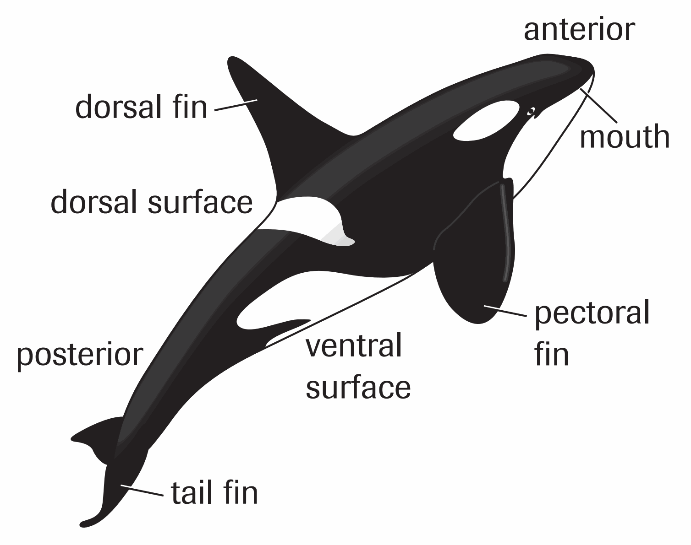

Teeth or baleen?
Toothed whales use teeth to catch prey. Baleen whales have hanging plates with fringed edges that strain food from seawater.
Use visible features as evidence.
OBSERVE · COMPARE · IDENTIFY
Biology 20 Investigation 5.1
A dichotomous key identifies an organism through pairs of statements. Read both statements, choose the one matching the organism, and follow the next step until a name is reached.
Toothed whales use teeth to catch prey. Baleen whales have hanging plates with fringed edges that strain food from seawater.
Use visible features as evidence.

CLASS INVESTIGATION
READ BOTH STATEMENTS
Keyboard: Tab to a control, then Enter or Space. A / B selects a statement; ← / → changes whale; ↑ / ↓ scrolls in fullscreen. Escape closes a panel. Shortcuts pause while typing or viewing a panel.
THINK TOGETHER
Responses are saved only in this browser on this device. Download a copy to keep or share them.
Independent research and key-building activities.
Biology 20 Investigation 5.1
Based on Nelson Biology Alberta 20–30, Investigation 5.1, pp. 162–163.